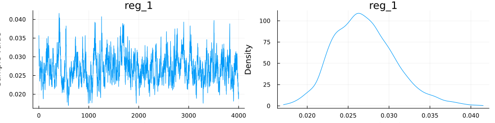

Exercise 2
Population = "Pop"using DataFrames, CSV, StatsModels, StatsBase, NextGPpheno = CSV.read(path2Data*"phenotypes",DataFrame)f = @formula(y ~ 1 + PR(M,9999))FormulaTerm
Response:
y(unknown)
Predictors:
1
(M)->PR(M, 9999)M = path2Data*"SNP$(Population)"myMap = Dict(:M => path2Data*"map.txt")priorVar = Dict(:M => 0.001,
:e => ([],150))runLMEM(f,pheno,50000,10000,10;outFolder="Population",VCV=priorVar,map=myMap,M)Output folder pureHOL exists. Removing its content
---------------- Summary of input ----------------
|Variable Term Type Levels |
|----------|---------------------|-----------------|--------|
| 1 | ConstantTerm{Int64} | Vector{Float64} | 1 |
| M | BayesPR | Matrix{Float64} | 12414 |
prior var-cov structure for "e" is either empty or "I" was given. An identity matrix will be used
---------------- Summary of analysis ----------------
|Effect Type Str df scale |
|--------|-----------------|------------|-----|--------|
| M | Random (Marker) | 1 block(s) | 4.0 | 0.0005 |
| e | Random | I | 4.0 | 75.0 |MCMC progress... 100%|███████████████████████████████████| Time: 0:10:16
b = summaryMCMC("b";summary=true,outFolder="Population")Chains MCMC chain (4000×1×1 Array{Float64, 3}):
Iterations = 1:1:4000
Number of chains = 1
Samples per chain = 4000
parameters = (Intercept)
Summary Statistics
mean std naive_se mcse ess rhat
(Intercept) 2.1824 0.3852 0.0136 0.0146 772.4295 1.0020beta = summaryMCMC("betaM",outFolder="pure$Breed")varBeta = summaryMCMC("varM",summary=true,plots=true,outFolder="pure$Breed")Chains MCMC chain (4000×1×1 Array{Float64, 3}):
Iterations = 1:1:4000
Number of chains = 1
Samples per chain = 4000
parameters = reg_1
Summary Statisticsmean std naivese mcse ess rhat reg1 0.0270 0.0038 0.0001 0.0003 155.2507 1.0009
................
